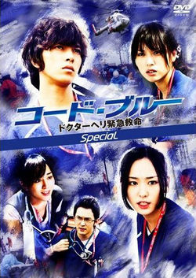
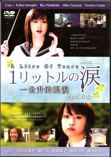

Recomendados
Uma lista de ótimos animes e doramas, alguns clássicos e outros inovadores, que nós da Animix
demos 5 estrelas e recomendamos a todos!
Animes
Doramas
 |
Naruto
Direção: Hayato Date
Studio Pierrot
2002 - 2007
220 Episódios
Áudio: Japonês ou Português |
 |
Naruto Shippuuden (Naruto: Crônicas do Furacão)
Direção: Hayato Date
Studio Pierrot
2007 - Atualmente
147 Episódios (em andamento)
Áudio: Japonês
Legendado |
 |
Bleach
Direção: Noriyuki Abe
Studio Pierrot
2004 - Atualmente
255 Episódios (em andamento)
Áudio: Japonês
Legendado |
 |
FullMetal Alchemist (Alquimista de Aço)
Direção: Seiji Mizushima
Estúdio BONES
2003 - 2004
51 Episódios
Áudio: Japonês ou Português |
 |
Bishojo Senshi Sailor Moon
(Sailor Moon; Sailor Moon R; Sailor Moon S; Sailor Moon Super S; Sailor Moon Stars)
Direção: Junichiro Sato, Kunihiko Ikuhara e Takuya Igarashi
Toei Animation
1992
200 Episódios
Áudio: Japonês ou Português |
Anime
Significado: Abreviatura de animation (animação) no Japão.
No ocidente, significa um genêro de animação produzido no Japão que recebe forte influência do mangá e
apresenta basicamente o mesmo traço.Apesar da implantação recente de elementos de computação gráfica, a
grande maioria dos animes ainda é totalmente desenhada a mão.
|  |
Code Blue (Código Azul)
Episódios: 22
Temporadas: 2
Elenco:
- Yamashita Tomohisa (Aizawa Kousaku)
- Aragaki Yui (Shiraishi Megumi)
- Toda Erika (Hiyama Mihoko)
- Higa Manami (Saejima Haruka)
- Asari Yosuke (Fuikawa Kazuo)
- Kodama Kiyoshi (Tadokoro Yoshiaki)
|
 |
Koizora
Live Action
120 minutos
Elenco:
- Mizusawa Elena (Tahara Mika)
- Seto Koji (Hiro)
- Abe Tsuyoshi (Yu)
- Aoi (Aya)
- Miura Shohei (Nozomu)
- Haru (Saki)
- Nagayama Kento (Kato Tatsuya)
|
|
NANA
Live Action
113 minutos
Elenco:
- Aoi Miyazaki (Nana Komatsu)
- Mika Nakashima (Nana Osaki)
- Ryuhei Matsuda (Ren Honjo)
- Tetsuji Tamayama (Takumi Ichinose)
|
|  |
NANA 2
Live Action
113 minutos
Elenco:
- Yui Ichikawa (Nana Komatsu)
- Mika Nakashima (Nana Osaki)
- Nobuo Kyou (Ren Honjo)
- Tetsuji Tamayama (Takumi Ichinose)
|
| |  |
1 Litre no Namida (1 Litro de Lágrimas)
Episódios: 11
Temporadas: 1
Elenco:
- Sawajiri Erika (Ikeuchi Aya)
- Yakushimaru Hiroko (Ikeuchi Shioka)
- Nishikido Ryo (Asou Haruto)
- Jinnai Takanori (Ikeuchi Mizuo)
- Fujiki Naohito (Mizuno Hiroshi)
- Narumi Riko (Ikeuchi Ako)
- Sanada Yuma (Ikeuchi Hiroki)
|
|
Dorama
Significado: é a definição generalizada do gênero novela oriental, seja ela J-Drama (drama japonês),
K-Drama (drama coreano), C-Drama (drama chinês) e até mesmo os Live Action (filmes baseados
em títulos de sucesso).
|